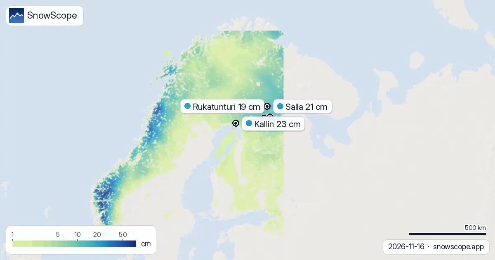
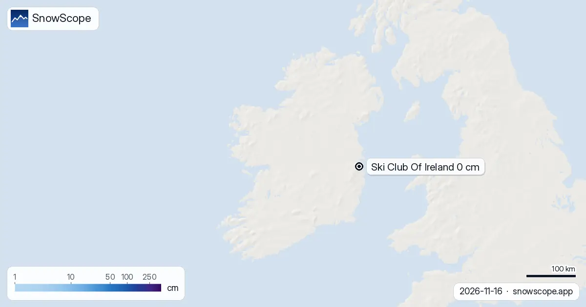

Schneeberichte · Schnee in Europa nach Ländern
Schnee in Europa nach Ländern: 140 km² schneebedeckter Boden in Albanien an diesem Montag, ein Zuwachs von 80 km² an einem Tag. Das sind 1 % des …
Schnee in Albanien heute: Schneehöhe und Neuschnee, 16. November 2026

140 km² schneebedeckter Boden in Albanien an diesem Montag, ein Zuwachs von 80 km² an einem Tag. Das sind 1 % des kartierten Berglands in Albanien.
Wie viel des Landes weiß ist
Die Schneegrenze liegt um 2.100 m. Die 40 km² der Vorwoche sind um 100 km² gewachsen.
Schnee in Albanien am 16. November: Schneedecke, Neuschnee, Schneehöhe nach Höhe, die nächsten Tage und die besten Skigebiete.

Schnee in Andorra am 16. November: Schneedecke, Neuschnee, Schneehöhe nach Höhe, die nächsten Tage und die besten Skigebiete.

Schnee in Österreich am 16. November: Schneedecke, Neuschnee, Schneehöhe nach Höhe, die nächsten Tage und die besten Skigebiete.

Schnee in Bosnien und Herzegowina am 16. November: Schneedecke, Neuschnee, Schneehöhe nach Höhe, die nächsten Tage und die besten Skigebiete.

Schnee in Bulgarien am 16. November: Schneedecke, Neuschnee, Schneehöhe nach Höhe, die nächsten Tage und die besten Skigebiete.

Schnee in Kroatien am 16. November: Schneedecke, Neuschnee, Schneehöhe nach Höhe, die nächsten Tage und die besten Skigebiete.

Schnee in Tschechien am 16. November: Schneedecke, Neuschnee, Schneehöhe nach Höhe, die nächsten Tage und die besten Skigebiete.

Schnee in Finnland am 16. November: Schneedecke, Neuschnee, Schneehöhe nach Höhe, die nächsten Tage und die besten Skigebiete.

Schnee in Frankreich am 16. November: Schneedecke, Neuschnee, Schneehöhe nach Höhe, die nächsten Tage und die besten Skigebiete.

Schnee in Deutschland am 16. November: Schneedecke, Neuschnee, Schneehöhe nach Höhe, die nächsten Tage und die besten Skigebiete.

Schnee in Griechenland am 16. November: Schneedecke, Neuschnee, Schneehöhe nach Höhe, die nächsten Tage und die besten Skigebiete.

Schnee in Ungarn am 16. November: Schneedecke, Neuschnee, Schneehöhe nach Höhe, die nächsten Tage und die besten Skigebiete.

Schnee in Irland am 16. November: Schneedecke, Neuschnee, Schneehöhe nach Höhe, die nächsten Tage und die besten Skigebiete.

Schnee in Italien am 16. November: Schneedecke, Neuschnee, Schneehöhe nach Höhe, die nächsten Tage und die besten Skigebiete.

Schnee im Kosovo am 16. November: Schneedecke, Neuschnee, Schneehöhe nach Höhe, die nächsten Tage und die besten Skigebiete.

Schnee in Montenegro am 16. November: Schneedecke, Neuschnee, Schneehöhe nach Höhe, die nächsten Tage und die besten Skigebiete.

Schnee in Nordmazedonien am 16. November: Schneedecke, Neuschnee, Schneehöhe nach Höhe, die nächsten Tage und die besten Skigebiete.

Schnee in Norwegen am 16. November: Schneedecke, Neuschnee, Schneehöhe nach Höhe, die nächsten Tage und die besten Skigebiete.

Schnee in Polen am 16. November: Schneedecke, Neuschnee, Schneehöhe nach Höhe, die nächsten Tage und die besten Skigebiete.

Schnee in Portugal am 16. November: Schneedecke, Neuschnee, Schneehöhe nach Höhe, die nächsten Tage und die besten Skigebiete.

Schnee in Rumänien am 16. November: Schneedecke, Neuschnee, Schneehöhe nach Höhe, die nächsten Tage und die besten Skigebiete.

Schnee in Serbien am 16. November: Schneedecke, Neuschnee, Schneehöhe nach Höhe, die nächsten Tage und die besten Skigebiete.

Schnee in der Slowakei am 16. November: Schneedecke, Neuschnee, Schneehöhe nach Höhe, die nächsten Tage und die besten Skigebiete.

Schnee in Slowenien am 16. November: Schneedecke, Neuschnee, Schneehöhe nach Höhe, die nächsten Tage und die besten Skigebiete.

Schnee in Spanien am 16. November: Schneedecke, Neuschnee, Schneehöhe nach Höhe, die nächsten Tage und die besten Skigebiete.

Schnee in Schweden am 16. November: Schneedecke, Neuschnee, Schneehöhe nach Höhe, die nächsten Tage und die besten Skigebiete.

Schnee in der Schweiz am 16. November: Schneedecke, Neuschnee, Schneehöhe nach Höhe, die nächsten Tage und die besten Skigebiete.

Schnee in Großbritannien am 16. November: Schneedecke, Neuschnee, Schneehöhe nach Höhe, die nächsten Tage und die besten Skigebiete.

Schnee in den ukrainischen Karpaten am 16. November: Schneedecke, Neuschnee, Schneehöhe nach Höhe, die nächsten Tage und die besten Skigebiete.